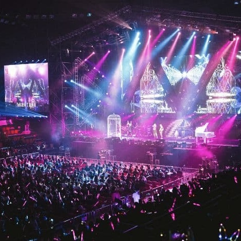

"QUAND LA CORÉE DEVIENT UNE
LE SKR FESTIVAL
"QUAND LA CORÉE DEVIENT UNE
HISTOIRE À VIVRE, ICI EN FRANCE."
LE SKR FESTIVAL
UN FESTIVAL, UN PONT ENTRE DEUX CULTURES EN PLEINE EFFERVESCENCE !
Le SKR FESTIVAL est un pont culturel entre la Corée et la France, célébrant la scène K-pop émergente et les talents de demain.
Il réunit artistes confirmés, artistes en pleine ascension et jeunes talents français sur une même scène, au cœur d’un village dédié à la culture coréenne avec 40 stands immersifs.
Le SKR FESTIVAL initie une dynamique franco-coréenne durable, rassemblant marques, institutions, artistes et médias autour d’une collaboration tournée vers l’avenir.